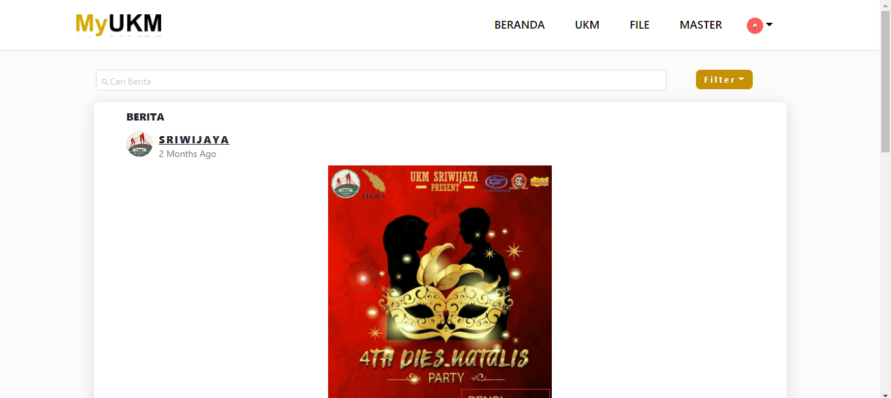
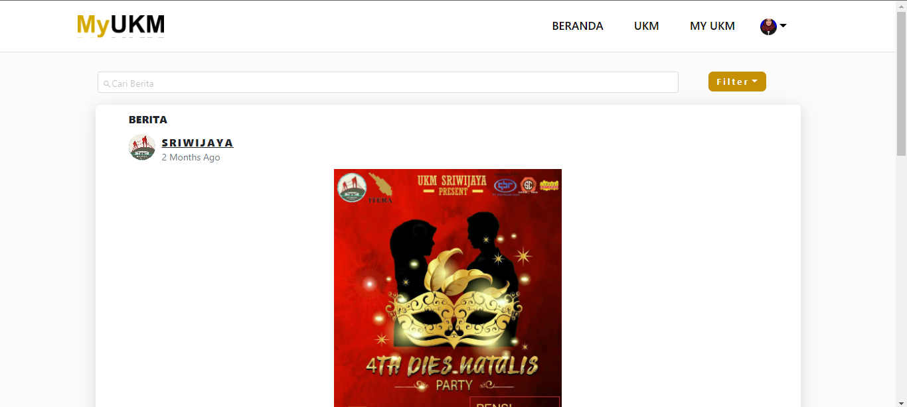

Front-End MyUKM
Deskripsi Aplikasi
Aplikasi MyUKM merupakan project Tugas Akhir, yang dikerjakan secara berkelompok dengan 3 orang yang terbagi menjadi UI/UX Desaign, Front-End dan Back-End. Pada bagian Front-End, aplikasi dibuat dengan menggunakan ReactJs. Pengguna MyUKM terbagi menjadi 3 role yaitu : ,
- User
Pengguna dengan role ini adalah mahasiswa. - Admin
Pengguna dengan role ini adalah mahasiswa yang menjabat sebagai pengurus UKM. - Superadmin
Pengguna dengan role ini adalah pihak akademik yang bertanggung jawab terhadap UKM ITERA.
Deskripsi Menu
Terdapat beberapa perbedaan menu untuk setiap role. Namun untuk menu Home selalu sama pada setiap role, yang mana pada menu ini menampilkan berita dan pengumuman. Berikut penjelasannya :
- Role Admin
- Menu UKM Pada menu ini terdapat sub menu lagi yaitu Tentang, Pengurus, Anggota dan Berita/Pengumuman. Pada sub menu tersebut terdapat RUD.
- Menu Tambah Pada menu ini terdapat sub menu lagi yaitu Berita, Pengumuman dan File. Pada sub menu tersebut hanya terdapat Create.
- Menu Profile Pada menu ini terdapat sub menu lagi yaitu Edit Akun, Lihat Detail Anggota, Lihat Kritik Saran dan Lihat File. pada sub menu tersebut terdapat CRUD.
- Role Superadmin
- Menu UKM Pada menu ini menampilkan semua UKM yang terdaftar di aplikasi. Dan terdapat 2 sub menu yaitu untuk menambahkan akun dengan role user dan dengan role superadmin.
- Menu FILE Pada menu ini menampilkan file-file yang dikirim oleh admin UKM.
- Menu Master Pada menu ini berisi CRUD untuk master bidang UKM, tipe file, program studi dan tahun kepengurusan.
- Menu Profile Pada menu ini menampilkan data pengguna yang dapat di ubah.
- Role User
- Menu UKM Pada menu ini menampilkan informasi seluruh UKM yang terdaftar di aplikasi.
- Menu MYUKM Pada menu ini menampilkan informasi UKM yang pengguna terdaftar sebagai anggota UKM.
- Menu Profile Pada menu ini menampilkan data pengguna yang dapat di ubah.

Home Admin
| username | : | admin1 |
| password | : | jalanjalan |

Home Superadmin
| username | : | superadmin1 |
| password | : | jalanjalan |

Home User
| username | : | user1 |
| password | : | jalanjalan |